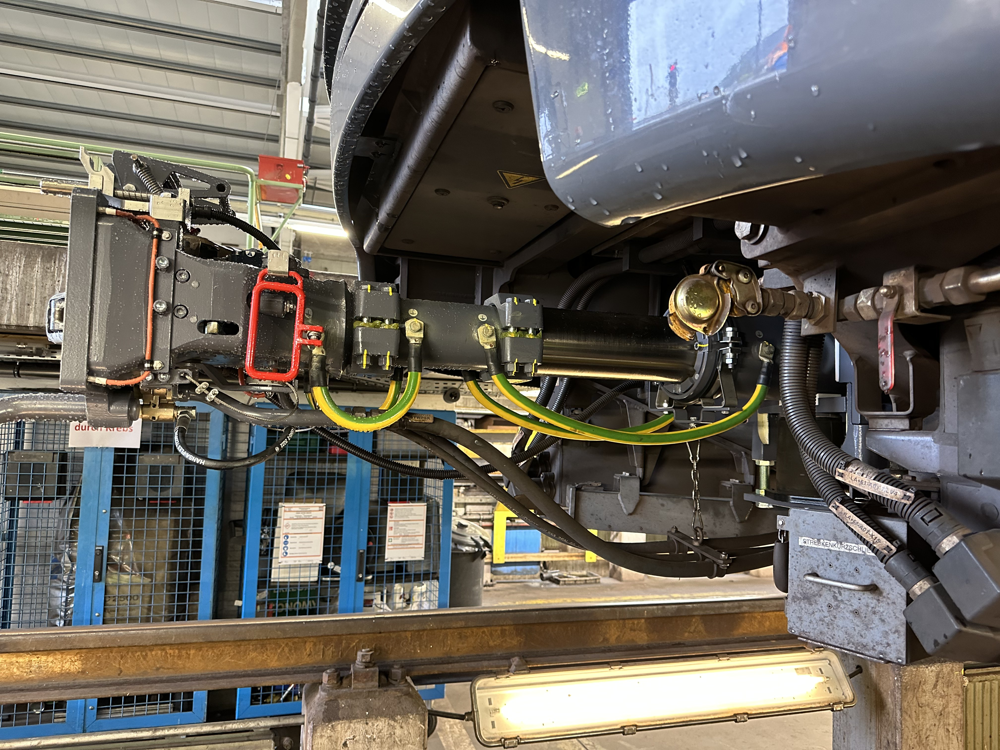

Kupplungsbereich unterhalb des Führerstands mit Anschlussleitungen.
Bauteil auf der Seite „Front“
Automatische Kupplung zum Verbinden zweier Wagen. Neben der Zug-/Druckkraftübertragung werden hier auch elektrische Leitungen (Steuer- und Energieversorgung) sowie Druckluftleitungen zwischen den Einheiten gekoppelt.
Automatische Mittelpufferkupplungen verbinden beim Zusammenfahren zweier Wageneinheiten mechanische, elektrische und pneumatische Schnittstellen in einem einzigen Kupplungsvorgang – ohne dass Personal zwischen die Fahrzeuge treten muss.
Konstruktiv müssen dabei Fluchtungsfehler (leichter seitlicher und vertikaler Versatz beim Ankuppeln) toleriert werden; gefederte und selbstzentrierende Elemente in der Kupplung gleichen das aus, bevor die Verriegelung einrastet.